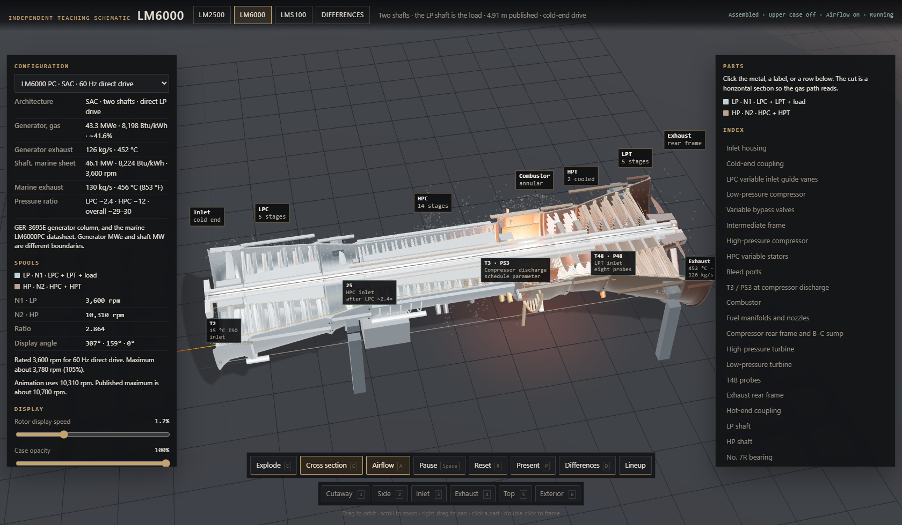
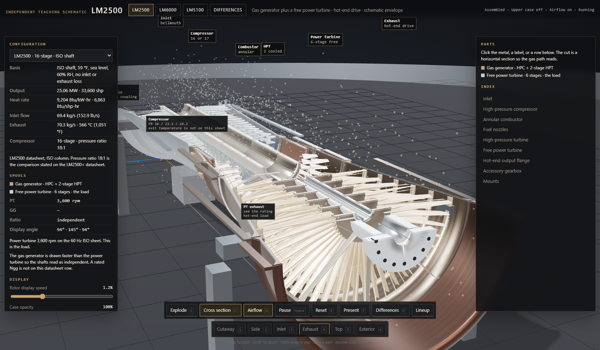
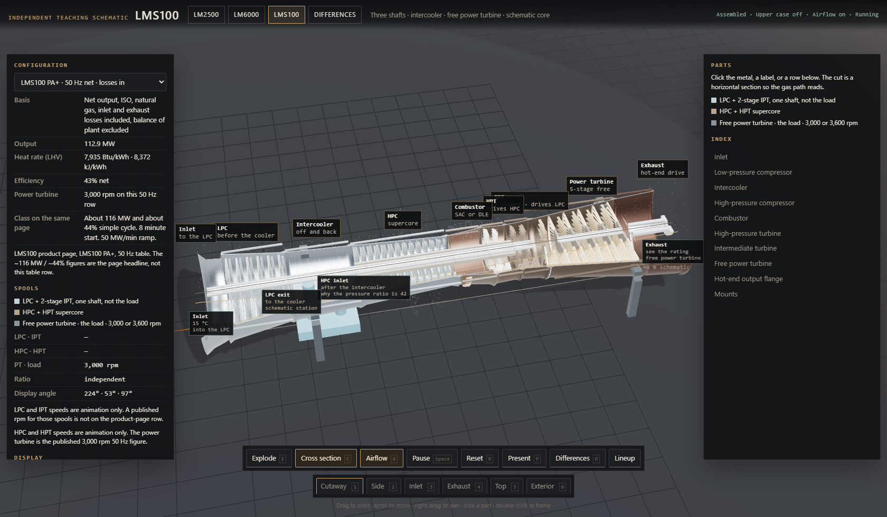
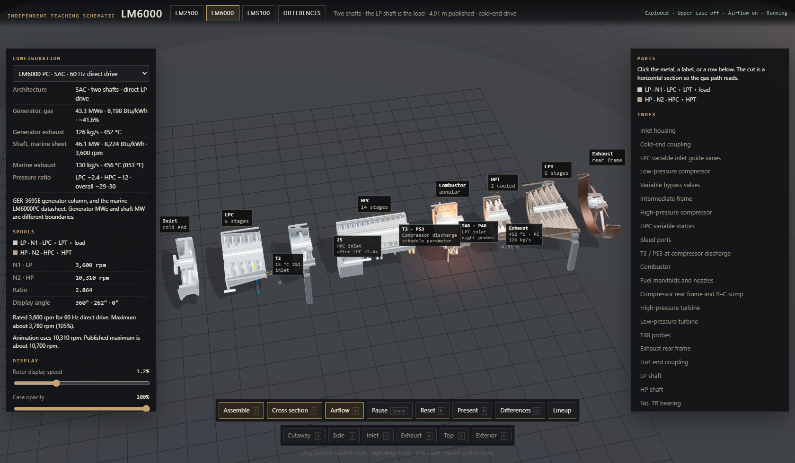
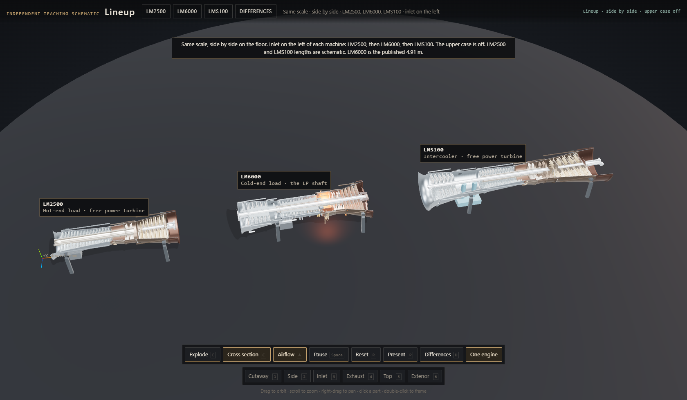
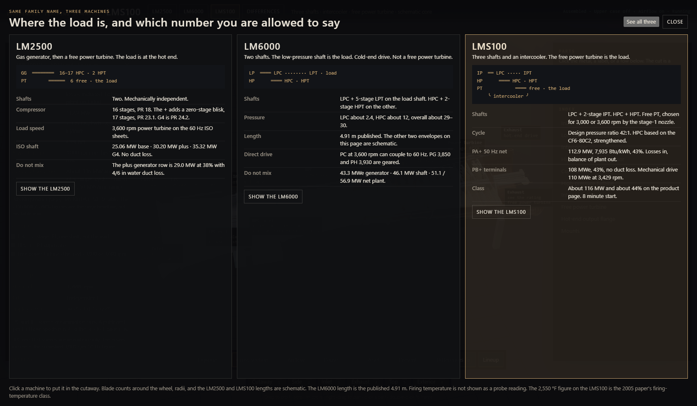

LM6000


LM2500 and LMS100




Pulled apart


Same scale


Which number you are allowed to say


In the model
Orbit
Drag to orbit, scroll to zoom, right-drag to pan. Click a part for its note. Double-click to frame it.
Explode E
Pulls the modules apart along the shaft. The button switches to Assemble.
Cross section C
Horizontal cut. The page opens with the upper case already off.
Airflow A
Draws the gas path. Pause is Space. Reset is R.
Three machines
LM2500, LM6000, and LMS100. Lineup puts all three on the floor at one scale. One engine returns to a single machine.
Ratings
The configuration menu switches published rows. Differences (D) opens the board. Views are Cutaway through Exterior, keys 1–6.
Changing the words
Open viewer.html in a text editor and search for START OF TURBINE INFORMATION. Change the words under a line that starts with ##. Leave the ## line. Lines that start with a single # are notes.
Stop at END OF TURBINE INFORMATION. Save and refresh. The model is one file and opens by double-click, with no server.